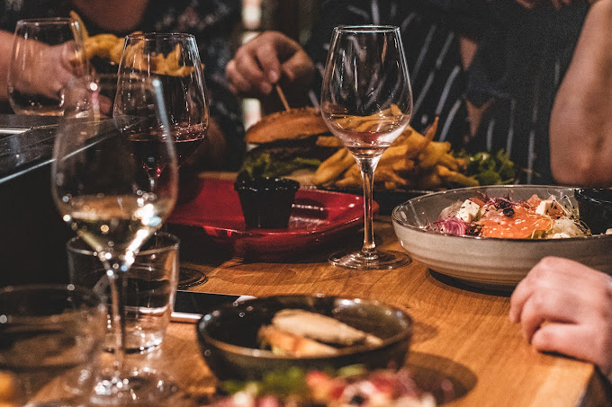

PLAT ET DESSERT DU JOUR
15,00 EUR
PLAT DU JOUR
12,00 EUR
MENU ENFANT (jusqu'à 12 ans)
9,50 EUR
SALADE CÉSAR
Batavia, filet de poulet français pané, oeuf mollet, oignons frits, salade, parmesan, tomate confite, croûtons
14,00 EUR
SALADE DU FROMAGER
Mélange de jeunes pousses, tomate confite, biscuit maison et chèvre coulant, fromage brebis râpé, chèvre miel et
pomme confite, copeaux de figue séchée, toast fromage frais aux herbes, poitrine de porc grillée.
14,00 EUR
SALADE POULPOUL
Poulet mariné pané façon tonkatsu, quinoa-boulghour, coriandre, oeuf mollet, oignons frits, mélange jeunes
pousses,
carottes en pickles, edamame, avocat, radis, betterave chioggia, choux rouge, haricots mungo, mélange de graines
&
noix
15,00 EUR
SALADE THAÏ AU BOEUF
Bœuf mariné dans sa sauce thaï (citron vert, gingembre, ail, sauce sriracha), salade batavia, quinoa-boulghour,
concombre, cacahuète, oignon rouge, tomate cerise, menthe, coriandre
15,00 EUR
SALADE TRUTRU
Gravlax de truite de Lau Balagnas, feta, sésame, mélange jeunes pousses, quinoa-boulghour, carottes en pickles,
edamame, avocat, radis, betterave chioggia, choux rouge, haricots mungo, mélange de graines & noix
17,00 EUR
SALADE VEGETA
Quinoa-boulghour, feta, mélange jeunes pousses, carottes en pickles, edamame, avocat, radis, betterave chioggia,
choux rouge, haricots mungo, mélange de graines & noix
14,00 EUR
TARTINE « CASSE-CROÛTE »
Pain de « La Boulange », tomates confites, jambon de Bayonne affiné 12 mois, fromage de brebis, caramel
balsamique,
oeuf au plat
9,00 EUR
TARTINE VERDE
Pain de « La Boulange », guacamole, ricotta, haricots edamame, radis, choux rouge, haricots mungo, mélange de
graines, oeuf mollet. Supplément truite fumée de Lau-Balagnas +3€
9,00 EUR
POULPOUL
Poulet pané façon tonkatsu, coriandre, oignons frits, oeuf mollet, riz vinaigré, carottes en pickles, edamame,
avocat, radis, betterave chioggia, choux rouge, haricots mungo, mélange de graines & noix
15,00 EUR
TRUTRU
Gravlax de truite de Lau Balagnas, sésame, fêta, riz vinaigré, carottes en pickles, edamame, avocat, radis,
betterave chioggia, choux rouge, haricots mungo, mélange de graines & noix
17,00 EUR
VEGETA
Quinoa-boulghour, feta, riz vinaigré, carottes en pickles, edamame, avocat, radis, betterave chioggia, choux
rouge,
haricots mungo, mélange de graines & noix
14,00 EUR
CLASARAIGNÉE DE PORC
Marinée sauce basque, très légèrement épicée comme leur caractère! Accompagnée d’un gratin de pommes de terre et
de
carotte rôtie.
16,00 EUR
NEW - BURRATA version hiver
Légumes confits (Oignons Rouges, Courgettes, Tomates, Poivrons Rouges et verts) , Pesto Vert, Croûtons,
Roquette,
mélange de graines
15,00 EUR
CÔTE À L’OS
Cuisson bleue ou saignante conseillée, avec frites maison. (bleu/saignant ≃ 20', à point ≃ 40')
65,00 EUR prix au kg
FISH AND CHIPS
So good
14,00 EUR
GNOCCHIS AU GORGONZOLA
crème au gorgonzola, servi avec salade et jambon de Bayonne IGP DR 12 mois (maison Phalip). Prévoir 20mn de
cuisson
avant dégustation.
12,00 EUR
LAMELLES D’ENCORNETS
à la plancha façon thaï (curry vert, huile de sésame, basilic, citronnelle) servies avec frites maison
15,00 EUR
PIÈCE DU BOUCHER
origine France, servie avec frites maison et salade. Sauce au choix : poivre, champignon, bleu.
19,90 EUR 250g
TARTARE DE BOEUF
Préparé au couteau avec câpres, parmesan, oeuf, tabasco, moutarde. (150g), frites maison
15,00 EUR
TARTARE DE TRUITE DES PYRÉNÉES
Préparé aux fines herbes, concombre confit et échalotes, sauce acidulée, frites et salade
16,00 EUR
TATAKI DE THON
Nouilles thaï & tataki sauce Yakumi (gingembre, citron vert, ail, sauce soja, vinaigre de riz, coriandre,
échalote)
16,50 EUR
TATAKI DE BOEUF
Nouilles thaï & tataki sauce Yakumi (gingembre, citron vert, ail, sauce soja, vinaigre de riz, coriandre,
échalote)
19,00 EUR
BIGOURDAN MEUH
Pain de « La Boulange », bœuf des Pyrénées haché frais, poitrine de porc grillée, fromage des Pyrénées, confit
d’oignons, tomate, batavia, sauce cocktail
16,00 EUR
BLEURGER – burger au bleu
Pain de « La Boulange », bœuf des Pyrénées haché frais, bleu d’Auvergne, poitrine de porc grillée, oignons
rouges,
mesclun, crème au bleu d’Auvergne
17,00 EUR
LE VG
Pain de « La Boulange », steak végétal (quinoa, légumes cuisinés, céréales), fromage des Pyrénées, confit
d’oignons,
tomate, batavia, sauce cocktail
15,00 EUR
LE 17
Pain de « La Boulange », poulet pané façon tonkatsu, cheddar, batavia, oignons rouges, tomate, crème curry
15,00 EUR
ASSIETTE DE JAMBON DE BAYONNE
IGP DR 12 mois (100 gr)
7,00 EUR
ASSIETTE DE JAMBON DE PORC NOIR
AOP DR Brut 20 mois (80 gr)
12,00 EUR
ASSIETTE DE FROMAGES
Fromage de brebis, gouda pesto rouge aux herbes, deux palais de chèvre et fourme d'Ambert + confiture de cerise
7,50 EUR